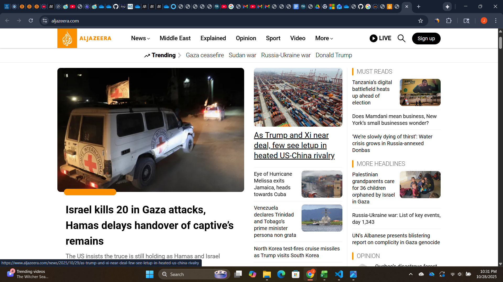

Screenshot of the Website
Evaluation Details
URL: https://www.aljazeera.com
Website Name: Al Jazeera
Target Audience: Individuals seeking global news coverage and in-depth journalism, especially focused on Middle Eastern and international affairs.
Organization: The site is organized by topic categories such as News, Opinion, Features, and Video. The top navigation menu provides quick access to different sections.
CRAP Principle Example: Contrast — Al Jazeera effectively uses white text on dark backgrounds in headers, which helps headlines stand out clearly against the page.
Accessibility Audit Score: 91 (based on Accessibility Check)
Effectiveness: The site effectively delivers global news and allows users to quickly find stories by region or topic.
Efficiency: Navigation is straightforward, and articles load quickly, allowing users to perform tasks with minimal delay.
Engagement: The website is visually appealing, featuring large images and headlines that encourage exploration. The content feels professional and appropriate for a news platform.
Recommendation: To improve accessibility, Al Jazeera could enhance contrast for some light text on image backgrounds and ensure all multimedia includes captions or transcripts.